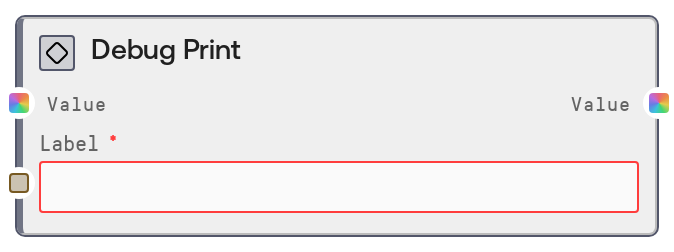

Debug Print¶

Usage¶
Use SaltDebugPrint when you need visibility into what data a workflow is carrying at specific points, without modifying that data. Typical scenarios include debugging unexpected outputs, validating intermediate calculations, or confirming that external integrations are returning the shape or structure you expect. Place it downstream of nodes whose output you want to inspect (for example, model inference nodes, data transformation nodes, or API response nodes), and connect its output onward as usual since it simply forwards the value. It works well alongside general inspection nodes such as SaltDisplayAny for visual preview and with utility nodes that transform or route data. A common pattern is to place SaltDebugPrint at critical junctions (before branching logic, before or after heavy transforms, and around external calls) with descriptive labels, then review the logs to diagnose issues or confirm behavior.
Inputs¶
| Field | Required | Type | Description | Example |
|---|---|---|---|---|
| value | True | WILDCARD | The value to be inspected and logged. Accepts any data type, including strings, numbers, booleans, lists, tuples, dicts, tensors, and custom objects. Container types are printed recursively; tensors are summarized by their shape, such as Tensor[1, 3, 512, 512]. There are no explicit size limits, but very large nested structures will produce correspondingly large log entries. | {"user_id": 42, "scores": [0.91, 0.87], "embedding": "Tensor[1, 768]"} |
| label | True | STRING | A short label used to identify this debug output in the logs. This is prepended to the formatted value, helping you distinguish multiple debug points within the same workflow. Keep it concise but specific enough to indicate where in the pipeline this node sits. | post-normalization-output |
Outputs¶
| Field | Type | Description | Example |
|---|---|---|---|
| value | WILDCARD | The exact same value that was provided as input, forwarded unchanged. Downstream nodes can treat this as if they had been wired directly to the original source. The data type and structure are identical to the input. | {"user_id": 42, "scores": [0.91, 0.87], "embedding": "Tensor[1, 768]"} |
Important Notes¶
- Performance: Logging very large lists, dictionaries, or tensors can produce large log lines and mildly impact performance, so reserve frequent debug logging for development or targeted diagnostics.
- Limitations: Tensor values are summarized only by shape, for example Tensor[4, 3, 512, 512], rather than full numeric contents, so you cannot inspect exact tensor values through this node.
- Behavior: The node is strictly pass-through; it never alters or clones the value, it only logs a string representation and returns the original object.
- Behavior: Nested containers such as lists, tuples, and dicts are printed recursively, while unusual or custom object types fall back to logging their class name, which may provide only a coarse-grained view of their contents.
- Behavior: All output goes to the application logging system, typically at debug level. If debug logging is disabled or filtered out, you may not see any messages even though the node is functioning.
Troubleshooting¶
- No log output visible: If you do not see any messages for your label, ensure that logging is configured to show debug-level logs and that you are checking the correct log stream for the execution engine.
- Log shows only the class name for a value: When the log message looks like "[my-label]: MyCustomClass" instead of detailed content, it means the value is of a custom or unsupported type. Wrap or convert it to standard types, such as a dict or string, in an upstream node to get a more informative printout.
- Logs are extremely long or noisy: This happens when printing very large nested structures. Narrow your debugging scope by inserting SaltDebugPrint closer to where the issue occurs, or pre-trim the data, for example by slicing lists or reducing dicts, before logging.
- Performance slowdown during debugging: If workflows feel slower with many SaltDebugPrint nodes active, especially on large data, temporarily disable or remove some of them once you have gathered enough information, or move logging to the most critical checkpoints only.